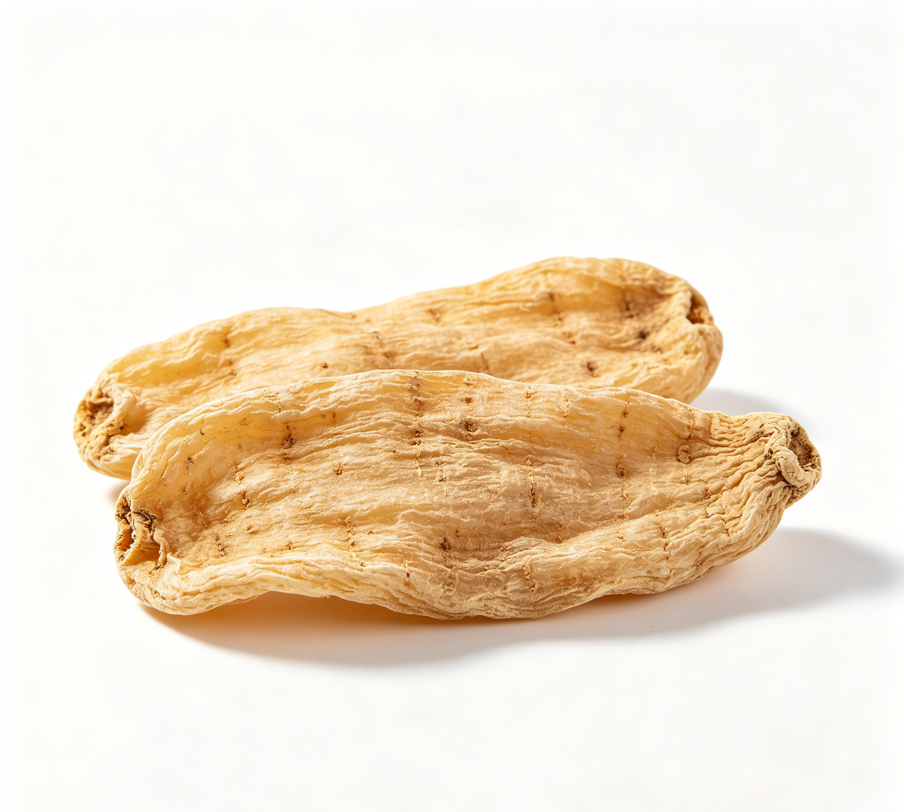

📋 基本信息
中文名天麻
拉丁名Gastrodia elata Bl.
英文名Gastrodiae Rhizoma
产地科：兰科（Orchidaceae）；属：天麻属（Gastrodia）。主产于云南（昭通彝良，'中国乌天麻之乡'）、贵州（大方）、陕西（宁陕、汉中）、湖北（宜昌）、四川、安徽（金寨）、湖南（雪峰山）等地，现以林下仿野生栽培为主。
性状本品呈椭圆形或长条形，略扁，皱缩而稍弯曲，长3～15cm，宽1.5～6cm，厚0.5～2cm。表面黄白色至黄棕色，有纵皱纹及由潜伏芽排列而成的横环纹多轮，有时可见棕褐色菌索。顶端有红棕色至深棕色鹦嘴状的芽或残留茎基（习称'鹦哥嘴'或'红小辫'）；另端有圆脐形疤痕（习称'肚脐眼'）。质坚硬，不易折断，断面较平坦，黄白色至淡棕色，角质样。气微，味甘。（《中国药典》2020年版一部）
用法用量3～10g。（《中国药典》2020年版一部）
贮藏置通风干燥处，防蛀。（《中国药典》2020年版一部）
☯ 传统属性
四气平
五味甘
归经肝经
功能主治息风止痉，平抑肝阳，祛风通络。用于小儿惊风，癫痫抽搐，破伤风，头痛眩晕，手足不遂，肢体麻木，风湿痹痛。（《中国药典》2020年版一部）
禁忌症《本草新编》谓'气血两虚之人，断不可轻用'；气血虚甚而无风象者慎服；阴虚津少者慎用。作药膳食用时不宜久煎高温久煮，以免天麻素等成分损失。【来源：《本草新编》及公开食疗文献整理】
毒性常规剂量安全性较好；偶见头晕、恶心、胸闷、皮肤瘙痒、荨麻疹等过敏反应报道；大剂量服用可致面部烘热、头痛加重、倦怠；津液亏虚者久服可致口干、便秘。出现不适应停用。
适宜体质血瘀质
适宜证型血瘀证、气滞血瘀证
🔬 现代研究
主要成分主要含酚性成分天麻素（gastrodin，即对羟基苯甲醇-β-D-葡萄吡喃糖苷）及其苷元对羟基苯甲醇，另含对羟基苯甲醛、巴利森苷（parishin）类（巴利森苷A、B、C、E等）、香草醇、琥珀酸、柠檬酸、天麻多糖、甾醇（β-谷甾醇、胡萝卜苷）、多种氨基酸及微量元素。天麻素与对羟基苯甲醇为药典含量测定指标成分。
药理作用已报道的药理活性包括：镇静、抗惊厥、抗癫痫（延长戊四氮惊厥潜伏期）、镇痛；改善脑循环、增加脑血流量、扩张血管、降血压；神经保护作用，改善学习记忆，对阿尔茨海默病、帕金森病等神经退行性模型有保护作用；抗眩晕、改善前庭功能；抗炎、抗氧化、免疫调节；抗血小板聚集。天麻素、对羟基苯甲醇及巴利森苷类为主要药效物质基础。
食疗功效食疗上取其平肝息风、祛风通络之效，常用于肝阳上亢所致的头晕目眩、偏头痛、肢体麻木的辅助调理；天麻鱼头汤祛头风止头痛，天麻炖鸡补虚定风，为云贵川及两湖地区传统药膳。
食养禁忌
🏭 产品形态与潜在功能
推荐形态
饮片粉末胶囊
潜在功能